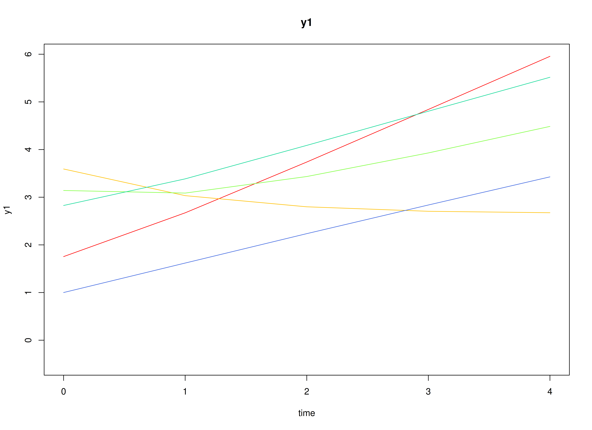
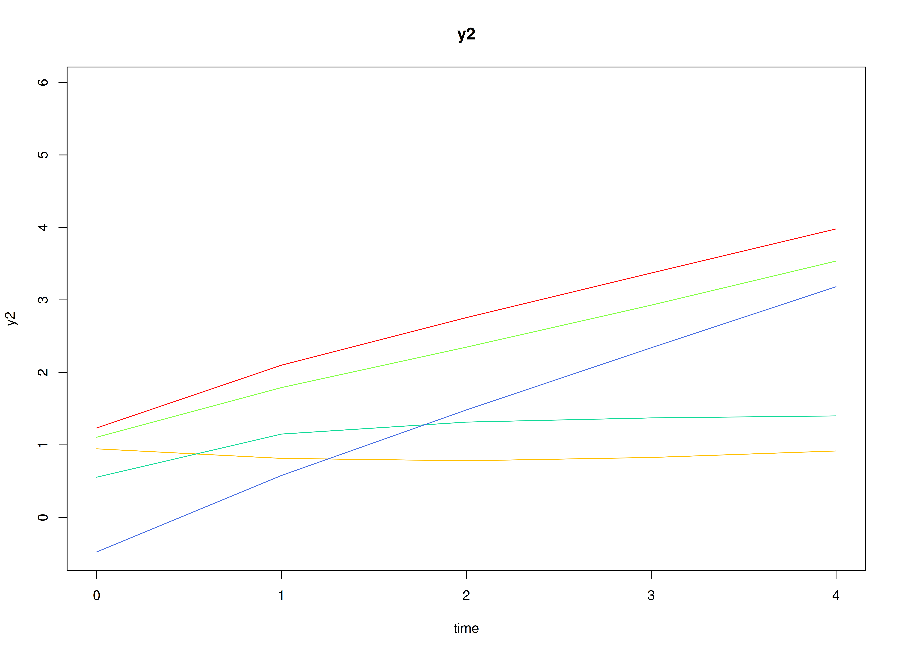
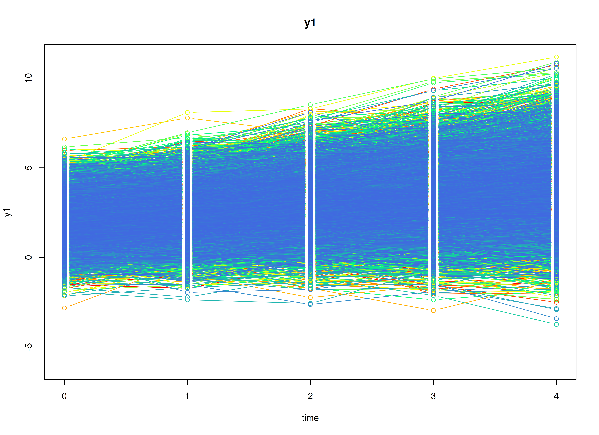
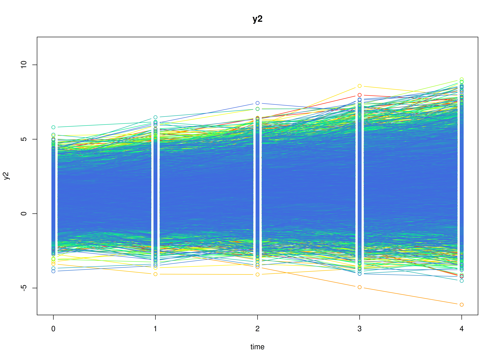
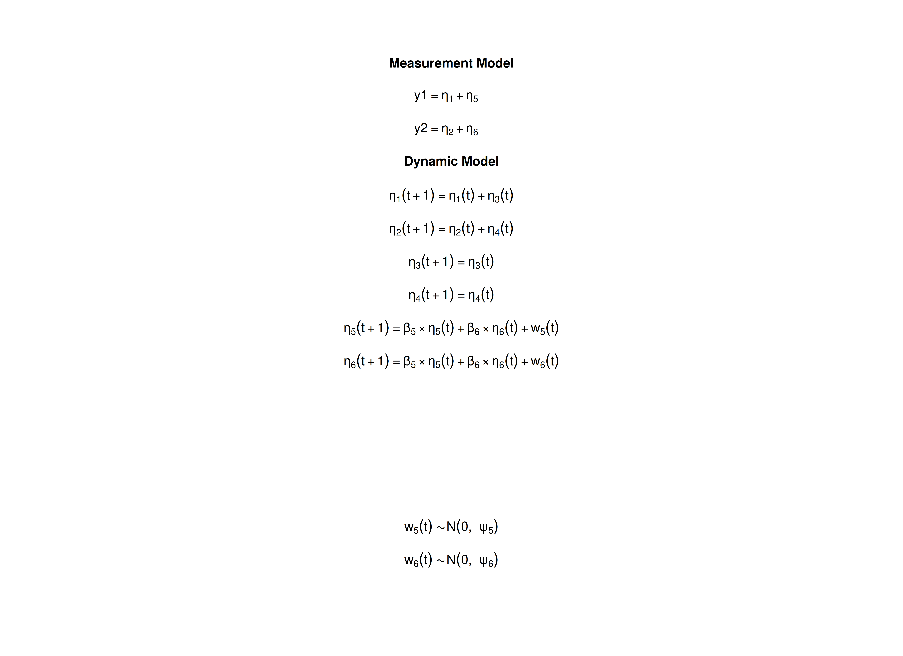

The Latent Curve Model with Structured Residuals
Ivan Jacob Agaloos Pesigan
2026-11-01
Source:vignettes/lcm-sr.Rmd
lcm-sr.RmdOverview
The latent curve model with structured residuals (LCM-SR) combines two ideas (Curran et al., 2014). Take alcohol use and depressive symptoms measured once a year in adolescents. Each adolescent follows a straight-line trajectory on each variable, with their own intercept and slope, as in the linear growth curve model. On each occasion, the adolescent is also above or below the trajectory, and these deviations, called the structured residuals, carry over to the next occasion and affect each other. The growth part describes how individuals differ in their long-term change; the residual part describes the within-person dynamics around it, with autoregressive and cross-lagged effects.
The LCM-SR is usually fitted as a structural equation model (SEM). It can also be written as a state space model by combining the state space forms of the linear growth curve model and of the vector autoregressive model: the levels and slopes of the two trajectories and the two residuals are latent states.
This tutorial does three things:
- It writes the LCM-SR as a state space model.
- It simulates data from the model with
SimSSMFixed(). - It fits the model to the simulated data with
dynr(state space) and withlavaan(SEM), and compares both sets of estimates with the values used to simulate the data.
No prior knowledge of state space models is needed. The vignette on the linear growth curve model explains the growth part in more detail.
Model
The measurement model is given by \[\begin{equation} \left( \begin{array}{c} Y_{1_{i, t}} \\ Y_{2_{i, t}} \\ \end{array} \right) = \left( \begin{array}{cccccc} 1 & 0 & 0 & 0 & 1 & 0 \\ 0 & 1 & 0 & 0 & 0 & 1 \\ \end{array} \right) \left( \begin{array}{c} \eta_{1_{i, t}} \\ \eta_{2_{i, t}} \\ \eta_{3_{i, t}} \\ \eta_{4_{i, t}} \\ \eta_{5_{i, t}} \\ \eta_{6_{i, t}} \\ \end{array} \right) \end{equation}\] where \(Y_{1_{i, t}}\) and \(Y_{2_{i, t}}\) are the two observed variables at time \(t\) and individual \(i\), \(\eta_{1_{i, t}}\) and \(\eta_{2_{i, t}}\) are the current levels of the two trajectories, \(\eta_{3_{i, t}}\) and \(\eta_{4_{i, t}}\) are their slopes, and \(\eta_{5_{i, t}}\) and \(\eta_{6_{i, t}}\) are the structured residuals.
In words, each observed score is the point on the individual’s trajectory plus the individual’s deviation from it on that occasion. As in most applications of the LCM-SR, there is no separate measurement error.
The dynamic structure is given by \[\begin{equation} \left( \begin{array}{c} \eta_{1_{i, t}} \\ \eta_{2_{i, t}} \\ \eta_{3_{i, t}} \\ \eta_{4_{i, t}} \\ \eta_{5_{i, t}} \\ \eta_{6_{i, t}} \\ \end{array} \right) = \left( \begin{array}{cccccc} 1 & 0 & 1 & 0 & 0 & 0 \\ 0 & 1 & 0 & 1 & 0 & 0 \\ 0 & 0 & 1 & 0 & 0 & 0 \\ 0 & 0 & 0 & 1 & 0 & 0 \\ 0 & 0 & 0 & 0 & \beta_{55} & \beta_{56} \\ 0 & 0 & 0 & 0 & \beta_{65} & \beta_{66} \\ \end{array} \right) \left( \begin{array}{c} \eta_{1_{i, t - 1}} \\ \eta_{2_{i, t - 1}} \\ \eta_{3_{i, t - 1}} \\ \eta_{4_{i, t - 1}} \\ \eta_{5_{i, t - 1}} \\ \eta_{6_{i, t - 1}} \\ \end{array} \right) + \left( \begin{array}{c} 0 \\ 0 \\ 0 \\ 0 \\ \zeta_{5_{i, t}} \\ \zeta_{6_{i, t}} \\ \end{array} \right), \quad \mathrm{with} \quad \left( \begin{array}{c} \zeta_{5_{i, t}} \\ \zeta_{6_{i, t}} \\ \end{array} \right) \sim \mathcal{N} \left( \mathbf{0}, \left( \begin{array}{cc} \psi_{55} & \psi_{56} \\ \psi_{65} & \psi_{66} \\ \end{array} \right) \right) . \end{equation}\]
In words, the first four rows are the linear growth curve model for each variable: the level at each occasion is the previous level plus the slope, and the slope stays the same, with no process noise. The last two rows are a vector autoregressive model for the residuals: \(\beta_{55}\) and \(\beta_{66}\) are the autoregressive effects, how much of a deviation from the trajectory carries over to the next occasion, and \(\beta_{56}\) and \(\beta_{65}\) are the cross-lagged effects: \(\beta_{56}\) is the effect of a deviation in the second variable on the deviation in the first variable at the next occasion, and \(\beta_{65}\) the reverse. \(\psi_{55}\), \(\psi_{66}\), and \(\psi_{56}\) are the variances and covariance of the new part of the deviations.
The initial condition holds the means, variances, and covariances of the intercepts and slopes (the levels at the first occasion are the intercepts), and the variances and covariance of the residuals at the first occasion. The residuals have mean zero, because they are deviations from the trajectories, and are uncorrelated with the intercepts and slopes.
Data Generation
Notation
Let \(t = 5\) be the number of time points and \(n = 10000\) be the number of individuals.
Let the means and the covariance matrix of the intercepts and slopes, in the order intercept 1, intercept 2, slope 1, and slope 2, be
\[\begin{equation} \left( \begin{array}{c} 2 \\ 1 \\ 0.5 \\ 0.3 \\ \end{array} \right) \quad \mathrm{and,} \quad \left( \begin{array}{cccc} 1 & 0.4 & 0.1 & 0.05 \\ 0.4 & 1 & 0.05 & 0.1 \\ 0.1 & 0.05 & 0.1 & 0.03 \\ 0.05 & 0.1 & 0.03 & 0.1 \\ \end{array} \right) . \end{equation}\]
Let the autoregressive and cross-lagged effects of the residuals and their process noise covariance matrix be
\[\begin{equation} \left( \begin{array}{cc} \beta_{55} & \beta_{56} \\ \beta_{65} & \beta_{66} \\ \end{array} \right) = \left( \begin{array}{cc} 0.4 & 0.1 \\ 0.15 & 0.3 \\ \end{array} \right) \quad \mathrm{and,} \quad \left( \begin{array}{cc} \psi_{55} & \psi_{56} \\ \psi_{65} & \psi_{66} \\ \end{array} \right) = \left( \begin{array}{cc} 0.4 & 0.1 \\ 0.1 & 0.4 \\ \end{array} \right) . \end{equation}\]
The residuals start from their stationary distribution: their
covariance matrix at the first occasion is the one they keep at every
later occasion, computed with SSMCovEta(),
\[\begin{equation} \left( \begin{array}{cc} \sigma_{55} & \sigma_{56} \\ \sigma_{65} & \sigma_{66} \\ \end{array} \right) = \left( \begin{array}{cc} 0.498 & 0.166 \\ 0.166 & 0.468 \\ \end{array} \right) . \end{equation}\]
R Function Arguments
The simulation functions take covariance matrices as lower triangular
Cholesky factors (the arguments ending in _l). Because the
intercepts and slopes have no process noise and there is no measurement
error, psi and theta have rows and columns of
zeros, and their Cholesky factors are built block by block.
n
#> [1] 10000
time
#> [1] 5
mu0
#> [1] 2.0 1.0 0.5 0.3 0.0 0.0
sigma0
#> [,1] [,2] [,3] [,4] [,5] [,6]
#> [1,] 1.00 0.40 0.10 0.05 0.0000000 0.0000000
#> [2,] 0.40 1.00 0.05 0.10 0.0000000 0.0000000
#> [3,] 0.10 0.05 0.10 0.03 0.0000000 0.0000000
#> [4,] 0.05 0.10 0.03 0.10 0.0000000 0.0000000
#> [5,] 0.00 0.00 0.00 0.00 0.4976100 0.1663655
#> [6,] 0.00 0.00 0.00 0.00 0.1663655 0.4683177
sigma0_l # sigma0_l <- t(chol(sigma0))
#> [,1] [,2] [,3] [,4] [,5] [,6]
#> [1,] 1.00 0.00000000 0.0000000 0.000000 0.0000000 0.0000000
#> [2,] 0.40 0.91651514 0.0000000 0.000000 0.0000000 0.0000000
#> [3,] 0.10 0.01091089 0.2998015 0.000000 0.0000000 0.0000000
#> [4,] 0.05 0.08728716 0.0802118 0.288872 0.0000000 0.0000000
#> [5,] 0.00 0.00000000 0.0000000 0.000000 0.7054148 0.0000000
#> [6,] 0.00 0.00000000 0.0000000 0.000000 0.2358406 0.6424149
alpha
#> [1] 0 0 0 0 0 0
beta
#> [,1] [,2] [,3] [,4] [,5] [,6]
#> [1,] 1 0 1 0 0.00 0.0
#> [2,] 0 1 0 1 0.00 0.0
#> [3,] 0 0 1 0 0.00 0.0
#> [4,] 0 0 0 1 0.00 0.0
#> [5,] 0 0 0 0 0.40 0.1
#> [6,] 0 0 0 0 0.15 0.3
psi
#> [,1] [,2] [,3] [,4] [,5] [,6]
#> [1,] 0 0 0 0 0.0 0.0
#> [2,] 0 0 0 0 0.0 0.0
#> [3,] 0 0 0 0 0.0 0.0
#> [4,] 0 0 0 0 0.0 0.0
#> [5,] 0 0 0 0 0.4 0.1
#> [6,] 0 0 0 0 0.1 0.4
psi_l
#> [,1] [,2] [,3] [,4] [,5] [,6]
#> [1,] 0 0 0 0 0.0000000 0.0000000
#> [2,] 0 0 0 0 0.0000000 0.0000000
#> [3,] 0 0 0 0 0.0000000 0.0000000
#> [4,] 0 0 0 0 0.0000000 0.0000000
#> [5,] 0 0 0 0 0.6324555 0.0000000
#> [6,] 0 0 0 0 0.1581139 0.6123724
nu
#> [1] 0 0
lambda
#> [,1] [,2] [,3] [,4] [,5] [,6]
#> [1,] 1 0 0 0 1 0
#> [2,] 0 1 0 0 0 1
theta
#> [,1] [,2]
#> [1,] 0 0
#> [2,] 0 0
theta_l
#> [,1] [,2]
#> [1,] 0 0
#> [2,] 0 0Visualizing the Dynamics Without Process Noise (n = 5 with Different Initial Condition)
Without process noise, the residuals shrink toward zero, so each trajectory approaches the individual’s straight line.


Using the SimSSMFixed Function from the
simStateSpace Package to Simulate Data
Now we add the process noise and simulate the full data set.
as.data.frame() returns the data in long format, one row
per individual and time point, with the columns id,
time, y1, and y2.
library(simStateSpace)
sim <- SimSSMFixed(
n = n,
time = time,
mu0 = mu0,
sigma0_l = sigma0_l,
alpha = alpha,
beta = beta,
psi_l = psi_l,
nu = nu,
lambda = lambda,
theta_l = theta_l,
type = 0
)
data <- as.data.frame(sim)
head(data)
#> id time y1 y2
#> 1 1 0 2.37388906 -0.1726676
#> 2 1 1 3.28150344 0.5992761
#> 3 1 2 3.16895848 0.5420004
#> 4 1 3 2.71113187 0.5169754
#> 5 1 4 3.48742737 1.2647509
#> 6 2 0 -0.01604581 -0.1810905
summary(data)
#> id time y1 y2
#> Min. : 1 Min. :0 Min. :-3.737 Min. :-6.1187
#> 1st Qu.: 2501 1st Qu.:1 1st Qu.: 1.820 1st Qu.: 0.5017
#> Median : 5000 Median :2 Median : 2.889 Median : 1.5044
#> Mean : 5000 Mean :2 Mean : 3.006 Mean : 1.5908
#> 3rd Qu.: 7500 3rd Qu.:3 3rd Qu.: 4.097 3rd Qu.: 2.6024
#> Max. :10000 Max. :4 Max. :11.177 Max. : 9.0230
plot(sim)

Model Fitting
We first fit the model with dynr, which estimates state
space models by maximum likelihood using the Kalman filter.
A dynr model is built from pieces that match the
equations above: the data, the initial condition, the measurement model,
the dynamic model, and the noise. Each parameter gets a name (for
example, beta_5_6 for \(\beta_{56}\)), and the same name used in
two places means one shared parameter. The starting values are set to
the population values for convenience; with real data, they would be
rough guesses.
Prepare Initial Condition
The means, variances, and covariances of the intercepts and slopes, and the variances and covariance of the residuals at the first occasion, are estimated. The means of the residuals and their covariances with the intercepts and slopes are fixed at zero.
params_sigma0 <- matrix(data = "fixed", nrow = p, ncol = p)
params_sigma0[1:4, 1:4] <- c(
"sigma0_1_1", "sigma0_2_1", "sigma0_3_1", "sigma0_4_1",
"sigma0_2_1", "sigma0_2_2", "sigma0_3_2", "sigma0_4_2",
"sigma0_3_1", "sigma0_3_2", "sigma0_3_3", "sigma0_4_3",
"sigma0_4_1", "sigma0_4_2", "sigma0_4_3", "sigma0_4_4"
)
params_sigma0[5:6, 5:6] <- c(
"sigma0_5_5", "sigma0_6_5",
"sigma0_6_5", "sigma0_6_6"
)
params_sigma0
#> [,1] [,2] [,3] [,4] [,5]
#> [1,] "sigma0_1_1" "sigma0_2_1" "sigma0_3_1" "sigma0_4_1" "fixed"
#> [2,] "sigma0_2_1" "sigma0_2_2" "sigma0_3_2" "sigma0_4_2" "fixed"
#> [3,] "sigma0_3_1" "sigma0_3_2" "sigma0_3_3" "sigma0_4_3" "fixed"
#> [4,] "sigma0_4_1" "sigma0_4_2" "sigma0_4_3" "sigma0_4_4" "fixed"
#> [5,] "fixed" "fixed" "fixed" "fixed" "sigma0_5_5"
#> [6,] "fixed" "fixed" "fixed" "fixed" "sigma0_6_5"
#> [,6]
#> [1,] "fixed"
#> [2,] "fixed"
#> [3,] "fixed"
#> [4,] "fixed"
#> [5,] "sigma0_6_5"
#> [6,] "sigma0_6_6"
dynr_initial <- dynr::prep.initial(
values.inistate = mu0,
params.inistate = c(
"mu0_1_1", "mu0_2_1", "mu0_3_1", "mu0_4_1", "fixed", "fixed"
),
values.inicov = sigma0,
params.inicov = params_sigma0
)Prepare Measurement Model
The loadings are fixed.
dynr_measurement <- dynr::prep.measurement(
values.load = lambda,
params.load = matrix(data = "fixed", nrow = 2, ncol = 6),
state.names = paste0("eta_", 1:6),
obs.names = c("y1", "y2")
)Prepare Dynamic Process
The first four formulas are the growth part, with no free parameters; the last two are the residual dynamics.
dynr_dynamics <- dynr::prep.formulaDynamics(
formula = list(
eta_1 ~ eta_1 + eta_3,
eta_2 ~ eta_2 + eta_4,
eta_3 ~ eta_3,
eta_4 ~ eta_4,
eta_5 ~ beta_5_5 * eta_5 + beta_5_6 * eta_6,
eta_6 ~ beta_6_5 * eta_5 + beta_6_6 * eta_6
),
startval = c(
beta_5_5 = beta[5, 5], beta_5_6 = beta[5, 6],
beta_6_5 = beta[6, 5], beta_6_6 = beta[6, 6]
),
isContinuousTime = FALSE
)Prepare Process Noise
Only the residuals have process noise. The measurement error is fixed at zero.
params_psi <- matrix(data = "fixed", nrow = p, ncol = p)
params_psi[5:6, 5:6] <- c(
"psi_5_5", "psi_6_5",
"psi_6_5", "psi_6_6"
)
dynr_noise <- dynr::prep.noise(
values.latent = psi,
params.latent = params_psi,
values.observed = theta,
params.observed = matrix(data = "fixed", nrow = 2, ncol = 2)
)Prepare the Model
The pieces are put together into one model. dynr writes
the model as C code to outfile and compiles it.
model <- dynr::dynr.model(
data = dynr_data,
initial = dynr_initial,
measurement = dynr_measurement,
dynamics = dynr_dynamics,
noise = dynr_noise,
outfile = "lcm-sr.c"
)The plot below shows the model equations with the parameter names.

Fit the Model
results <- dynr::dynr.cook(
model,
debug_flag = TRUE,
verbose = FALSE
)
#> [1] "Get ready!!!!"
#> using C compiler: ‘gcc (Ubuntu 15.2.0-16ubuntu1) 15.2.0’
#> Optimization function called.
#> Starting Hessian calculation ...
#> Finished Hessian calculation.
#> Original exit flag: 3
#> Modified exit flag: 3
#> Optimization terminated successfully: ftol_rel or ftol_abs was reached.
#> Original fitted parameters: 0.3777867 0.1079022 0.1499191 0.3216473 -0.9404059
#> 0.2526484 -0.9676209 2.008439 0.9935554 0.4986007 0.29847 0.02345068 0.3777211
#> 0.09515251 0.0571526 -0.1716214 0.01402679 0.08892801 -2.411319 0.2477236
#> -2.478779 -0.7015993 0.3587313 -0.9039157
#>
#> Transformed fitted parameters: 0.3777867 0.1079022 0.1499191 0.3216473
#> 0.3904693 0.09865144 0.4049101 2.008439 0.9935554 0.4986007 0.29847 1.023728
#> 0.3866836 0.09741027 0.05850871 0.9883566 0.04860865 0.09700387 0.0991315
#> 0.02883796 0.09935493 0.4957918 0.177856 0.4687833
#>
#> Doing end processing
#> Successful trial
#> Total Time: 7.207033
#> Backend Time: 7.200523Summary
The summary lists each estimate with its standard error, \(t\) value, confidence interval, and \(p\) value.
summary(results)
#> Coefficients:
#> Estimate Std. Error t value ci.lower ci.upper Pr(>|t|)
#> beta_5_5 0.377787 0.014530 26.000 0.349308 0.406265 < 0.0000000000000002
#> beta_5_6 0.107902 0.010803 9.988 0.086728 0.129076 < 0.0000000000000002
#> beta_6_5 0.149919 0.011430 13.116 0.127517 0.172321 < 0.0000000000000002
#> beta_6_6 0.321647 0.013806 23.298 0.294589 0.348706 < 0.0000000000000002
#> psi_5_5 0.390469 0.005700 68.507 0.379298 0.401640 < 0.0000000000000002
#> psi_6_5 0.098651 0.004263 23.140 0.090295 0.107007 < 0.0000000000000002
#> psi_6_6 0.404910 0.005667 71.452 0.393803 0.416017 < 0.0000000000000002
#> mu0_1_1 2.008439 0.011999 167.382 1.984921 2.031957 < 0.0000000000000002
#> mu0_2_1 0.993555 0.011723 84.756 0.970580 1.016531 < 0.0000000000000002
#> mu0_3_1 0.498601 0.003942 126.491 0.490875 0.506326 < 0.0000000000000002
#> mu0_4_1 0.298470 0.003927 76.008 0.290774 0.306166 < 0.0000000000000002
#> sigma0_1_1 1.023728 0.029669 34.505 0.965578 1.081878 < 0.0000000000000002
#> sigma0_2_1 0.386684 0.023048 16.777 0.341510 0.431858 < 0.0000000000000002
#> sigma0_3_1 0.097410 0.006783 14.361 0.084116 0.110704 < 0.0000000000000002
#> sigma0_4_1 0.058509 0.006104 9.586 0.046545 0.070472 < 0.0000000000000002
#> sigma0_2_2 0.988357 0.027590 35.823 0.934281 1.042432 < 0.0000000000000002
#> sigma0_3_2 0.048609 0.006053 8.031 0.036745 0.060472 0.000000000000000495
#> sigma0_4_2 0.097004 0.006470 14.992 0.084322 0.109686 < 0.0000000000000002
#> sigma0_3_3 0.099131 0.002848 34.812 0.093550 0.104713 < 0.0000000000000002
#> sigma0_4_3 0.028838 0.002156 13.373 0.024611 0.033064 < 0.0000000000000002
#> sigma0_4_4 0.099355 0.002783 35.697 0.093900 0.104810 < 0.0000000000000002
#> sigma0_5_5 0.495792 0.024162 20.519 0.448435 0.543149 < 0.0000000000000002
#> sigma0_6_5 0.177856 0.019309 9.211 0.140011 0.215701 < 0.0000000000000002
#> sigma0_6_6 0.468783 0.022291 21.030 0.425094 0.512473 < 0.0000000000000002
#>
#> beta_5_5 ***
#> beta_5_6 ***
#> beta_6_5 ***
#> beta_6_6 ***
#> psi_5_5 ***
#> psi_6_5 ***
#> psi_6_6 ***
#> mu0_1_1 ***
#> mu0_2_1 ***
#> mu0_3_1 ***
#> mu0_4_1 ***
#> sigma0_1_1 ***
#> sigma0_2_1 ***
#> sigma0_3_1 ***
#> sigma0_4_1 ***
#> sigma0_2_2 ***
#> sigma0_3_2 ***
#> sigma0_4_2 ***
#> sigma0_3_3 ***
#> sigma0_4_3 ***
#> sigma0_4_4 ***
#> sigma0_5_5 ***
#> sigma0_6_5 ***
#> sigma0_6_6 ***
#> ---
#> Signif. codes: 0 '***' 0.001 '**' 0.01 '*' 0.05 '.' 0.1 ' ' 1
#>
#> -2 log-likelihood value at convergence = 254743.09
#> AIC = 254791.09
#> BIC = 255002.76The LCM-SR in Structural Equation Modeling
The same model in SEM form, fitted with lavaan, should
give nearly the same estimates. In SEM, each variable at each occasion
is a separate observed variable in one row per individual (wide format).
Each variable has an intercept factor with loadings of 1, a slope factor
with loadings 0, 1, 2, 3, and 4, and one residual factor per occasion
with a loading of 1.
Wide Data Set
as.data.frame() with long = FALSE returns
the data in wide format.
data <- as.data.frame(sim, long = FALSE)
head(data)
#> id y1_0 y2_0 y1_1 y2_1 y1_2 y2_2
#> 1 1 2.37388906 -0.17266755503 3.2815034 0.5992761 3.168958 0.5420004
#> 2 2 -0.01604581 -0.18109050141 0.6828646 -0.1135152 1.700621 -1.8224976
#> 3 3 3.26382925 1.52047814091 5.8037340 2.7814303 6.188715 3.4654056
#> 4 4 1.94339676 -0.13444204172 1.9723843 -0.1755396 1.899682 0.9515669
#> 5 5 0.87525257 -2.33329417436 1.9247151 -0.3515431 2.077691 -0.2428386
#> 6 6 0.04156401 -0.00005003437 0.5462923 1.5357655 1.735087 1.9415441
#> y1_3 y2_3 y1_4 y2_4
#> 1 2.711132 0.5169754 3.487427 1.2647509
#> 2 2.239767 -1.1882699 2.280529 -3.1482622
#> 3 7.522857 4.3100330 7.272734 5.4493969
#> 4 1.482315 -0.5940969 1.966155 -0.1135456
#> 5 2.488611 0.2684330 2.861655 0.1558327
#> 6 2.369504 3.4956264 2.910286 5.2712928Model
The model has the same structure for every occasion, so we write it
with paste0(). The parameter labels match the dynr names.
Giving the residual effects and the process noise the same label on
every occasion constrains them to be equal over time, as in the state
space model.
waves <- 0:(time - 1)
now <- waves[-1]
before <- waves[-time]
model <- paste(
c(
"# growth factors",
paste0("i1 =~ ", paste0("1 * y1_", waves, collapse = " + ")),
paste0("i2 =~ ", paste0("1 * y2_", waves, collapse = " + ")),
paste0("s1 =~ ", paste0(waves, " * y1_", waves, collapse = " + ")),
paste0("s2 =~ ", paste0(waves, " * y2_", waves, collapse = " + ")),
"# structured residuals",
paste0("r1_", waves, " =~ 1 * y1_", waves),
paste0("r2_", waves, " =~ 1 * y2_", waves),
"# autoregressive and cross-lagged effects of the residuals",
paste0(
"r1_", now, " ~ beta_5_5 * r1_", before, " + beta_5_6 * r2_", before
),
paste0(
"r2_", now, " ~ beta_6_5 * r1_", before, " + beta_6_6 * r2_", before
),
"# residuals at the first occasion",
"r1_0 ~~ sigma0_5_5 * r1_0",
"r2_0 ~~ sigma0_6_6 * r2_0",
"r1_0 ~~ sigma0_6_5 * r2_0",
"# process noise at later occasions",
paste0("r1_", now, " ~~ psi_5_5 * r1_", now),
paste0("r2_", now, " ~~ psi_6_6 * r2_", now),
paste0("r1_", now, " ~~ psi_6_5 * r2_", now),
"# growth factors: means",
"i1 ~ mu0_1_1 * 1",
"i2 ~ mu0_2_1 * 1",
"s1 ~ mu0_3_1 * 1",
"s2 ~ mu0_4_1 * 1",
"# growth factors: variances and covariances",
"i1 ~~ sigma0_1_1 * i1",
"i2 ~~ sigma0_2_2 * i2",
"s1 ~~ sigma0_3_3 * s1",
"s2 ~~ sigma0_4_4 * s2",
"i1 ~~ sigma0_2_1 * i2",
"i1 ~~ sigma0_3_1 * s1",
"i1 ~~ sigma0_4_1 * s2",
"i2 ~~ sigma0_3_2 * s1",
"i2 ~~ sigma0_4_2 * s2",
"s1 ~~ sigma0_4_3 * s2",
"# growth factors are uncorrelated with the first residuals",
paste0(c("i1", "i2", "s1", "s2"), " ~~ 0 * r1_0 + 0 * r2_0"),
"# no measurement error and no observed intercepts",
paste0("y1_", waves, " ~~ 0 * y1_", waves),
paste0("y2_", waves, " ~~ 0 * y2_", waves),
paste0("y1_", waves, " ~ 0 * 1"),
paste0("y2_", waves, " ~ 0 * 1")
),
collapse = "\n"
)
cat(model)
#> # growth factors
#> i1 =~ 1 * y1_0 + 1 * y1_1 + 1 * y1_2 + 1 * y1_3 + 1 * y1_4
#> i2 =~ 1 * y2_0 + 1 * y2_1 + 1 * y2_2 + 1 * y2_3 + 1 * y2_4
#> s1 =~ 0 * y1_0 + 1 * y1_1 + 2 * y1_2 + 3 * y1_3 + 4 * y1_4
#> s2 =~ 0 * y2_0 + 1 * y2_1 + 2 * y2_2 + 3 * y2_3 + 4 * y2_4
#> # structured residuals
#> r1_0 =~ 1 * y1_0
#> r1_1 =~ 1 * y1_1
#> r1_2 =~ 1 * y1_2
#> r1_3 =~ 1 * y1_3
#> r1_4 =~ 1 * y1_4
#> r2_0 =~ 1 * y2_0
#> r2_1 =~ 1 * y2_1
#> r2_2 =~ 1 * y2_2
#> r2_3 =~ 1 * y2_3
#> r2_4 =~ 1 * y2_4
#> # autoregressive and cross-lagged effects of the residuals
#> r1_1 ~ beta_5_5 * r1_0 + beta_5_6 * r2_0
#> r1_2 ~ beta_5_5 * r1_1 + beta_5_6 * r2_1
#> r1_3 ~ beta_5_5 * r1_2 + beta_5_6 * r2_2
#> r1_4 ~ beta_5_5 * r1_3 + beta_5_6 * r2_3
#> r2_1 ~ beta_6_5 * r1_0 + beta_6_6 * r2_0
#> r2_2 ~ beta_6_5 * r1_1 + beta_6_6 * r2_1
#> r2_3 ~ beta_6_5 * r1_2 + beta_6_6 * r2_2
#> r2_4 ~ beta_6_5 * r1_3 + beta_6_6 * r2_3
#> # residuals at the first occasion
#> r1_0 ~~ sigma0_5_5 * r1_0
#> r2_0 ~~ sigma0_6_6 * r2_0
#> r1_0 ~~ sigma0_6_5 * r2_0
#> # process noise at later occasions
#> r1_1 ~~ psi_5_5 * r1_1
#> r1_2 ~~ psi_5_5 * r1_2
#> r1_3 ~~ psi_5_5 * r1_3
#> r1_4 ~~ psi_5_5 * r1_4
#> r2_1 ~~ psi_6_6 * r2_1
#> r2_2 ~~ psi_6_6 * r2_2
#> r2_3 ~~ psi_6_6 * r2_3
#> r2_4 ~~ psi_6_6 * r2_4
#> r1_1 ~~ psi_6_5 * r2_1
#> r1_2 ~~ psi_6_5 * r2_2
#> r1_3 ~~ psi_6_5 * r2_3
#> r1_4 ~~ psi_6_5 * r2_4
#> # growth factors: means
#> i1 ~ mu0_1_1 * 1
#> i2 ~ mu0_2_1 * 1
#> s1 ~ mu0_3_1 * 1
#> s2 ~ mu0_4_1 * 1
#> # growth factors: variances and covariances
#> i1 ~~ sigma0_1_1 * i1
#> i2 ~~ sigma0_2_2 * i2
#> s1 ~~ sigma0_3_3 * s1
#> s2 ~~ sigma0_4_4 * s2
#> i1 ~~ sigma0_2_1 * i2
#> i1 ~~ sigma0_3_1 * s1
#> i1 ~~ sigma0_4_1 * s2
#> i2 ~~ sigma0_3_2 * s1
#> i2 ~~ sigma0_4_2 * s2
#> s1 ~~ sigma0_4_3 * s2
#> # growth factors are uncorrelated with the first residuals
#> i1 ~~ 0 * r1_0 + 0 * r2_0
#> i2 ~~ 0 * r1_0 + 0 * r2_0
#> s1 ~~ 0 * r1_0 + 0 * r2_0
#> s2 ~~ 0 * r1_0 + 0 * r2_0
#> # no measurement error and no observed intercepts
#> y1_0 ~~ 0 * y1_0
#> y1_1 ~~ 0 * y1_1
#> y1_2 ~~ 0 * y1_2
#> y1_3 ~~ 0 * y1_3
#> y1_4 ~~ 0 * y1_4
#> y2_0 ~~ 0 * y2_0
#> y2_1 ~~ 0 * y2_1
#> y2_2 ~~ 0 * y2_2
#> y2_3 ~~ 0 * y2_3
#> y2_4 ~~ 0 * y2_4
#> y1_0 ~ 0 * 1
#> y1_1 ~ 0 * 1
#> y1_2 ~ 0 * 1
#> y1_3 ~ 0 * 1
#> y1_4 ~ 0 * 1
#> y2_0 ~ 0 * 1
#> y2_1 ~ 0 * 1
#> y2_2 ~ 0 * 1
#> y2_3 ~ 0 * 1
#> y2_4 ~ 0 * 1lavaan::lavaan() adds nothing to the model by itself, so
every parameter above is exactly the one written.
fit <- lavaan::lavaan(
model = model,
data = data
)
lavaan::summary(fit)
#> lavaan 0.7-3 ended normally after 61 iterations
#>
#> Estimator ML
#> Optimization method NLMINB
#> Number of model parameters 45
#> Number of equality constraints 21
#>
#> Number of observations 10000
#>
#> Model Test User Model:
#>
#> Test statistic 33.785
#> Degrees of freedom 41
#> P-value (Chi-square) 0.781
#>
#> Browne's residual (NT model-based) test
#> Test statistic 33.829
#> Degrees of freedom 41
#> P-value (Chi-square) 0.779
#>
#> Parameter Estimates:
#>
#> Standard errors Standard
#> Information Expected
#> Information saturated (h1) model Structured
#>
#> Latent Variables:
#> Estimate Std.Err z-value P(>|z|)
#> i1 =~
#> y1_0 1.000
#> y1_1 1.000
#> y1_2 1.000
#> y1_3 1.000
#> y1_4 1.000
#> i2 =~
#> y2_0 1.000
#> y2_1 1.000
#> y2_2 1.000
#> y2_3 1.000
#> y2_4 1.000
#> s1 =~
#> y1_0 0.000
#> y1_1 1.000
#> y1_2 2.000
#> y1_3 3.000
#> y1_4 4.000
#> s2 =~
#> y2_0 0.000
#> y2_1 1.000
#> y2_2 2.000
#> y2_3 3.000
#> y2_4 4.000
#> r1_0 =~
#> y1_0 1.000
#> r1_1 =~
#> y1_1 1.000
#> r1_2 =~
#> y1_2 1.000
#> r1_3 =~
#> y1_3 1.000
#> r1_4 =~
#> y1_4 1.000
#> r2_0 =~
#> y2_0 1.000
#> r2_1 =~
#> y2_1 1.000
#> r2_2 =~
#> y2_2 1.000
#> r2_3 =~
#> y2_3 1.000
#> r2_4 =~
#> y2_4 1.000
#>
#> Regressions:
#> Estimate Std.Err z-value P(>|z|)
#> r1_1 ~
#> r1_0 (b_5_5) 0.378 0.015 25.727 0.000
#> r2_0 (b_5_6) 0.109 0.011 10.066 0.000
#> r1_2 ~
#> r1_1 (b_5_5) 0.378 0.015 25.727 0.000
#> r2_1 (b_5_6) 0.109 0.011 10.066 0.000
#> r1_3 ~
#> r1_2 (b_5_5) 0.378 0.015 25.727 0.000
#> r2_2 (b_5_6) 0.109 0.011 10.066 0.000
#> r1_4 ~
#> r1_3 (b_5_5) 0.378 0.015 25.727 0.000
#> r2_3 (b_5_6) 0.109 0.011 10.066 0.000
#> r2_1 ~
#> r1_0 (b_6_5) 0.151 0.011 13.162 0.000
#> r2_0 (b_6_6) 0.322 0.014 23.533 0.000
#> r2_2 ~
#> r1_1 (b_6_5) 0.151 0.011 13.162 0.000
#> r2_1 (b_6_6) 0.322 0.014 23.533 0.000
#> r2_3 ~
#> r1_2 (b_6_5) 0.151 0.011 13.162 0.000
#> r2_2 (b_6_6) 0.322 0.014 23.533 0.000
#> r2_4 ~
#> r1_3 (b_6_5) 0.151 0.011 13.162 0.000
#> r2_3 (b_6_6) 0.322 0.014 23.533 0.000
#>
#> Covariances:
#> Estimate Std.Err z-value P(>|z|)
#> r1_0 ~~
#> r2_0 (s0_6) 0.179 0.020 9.136 0.000
#> .r1_1 ~~
#> .r2_1 (p_6_) 0.099 0.004 23.233 0.000
#> .r1_2 ~~
#> .r2_2 (p_6_) 0.099 0.004 23.233 0.000
#> .r1_3 ~~
#> .r2_3 (p_6_) 0.099 0.004 23.233 0.000
#> .r1_4 ~~
#> .r2_4 (p_6_) 0.099 0.004 23.233 0.000
#> i1 ~~
#> i2 (s0_2) 0.385 0.023 16.416 0.000
#> s1 (s0_3_1) 0.098 0.007 14.085 0.000
#> s2 (s0_4_1) 0.059 0.006 9.589 0.000
#> i2 ~~
#> s1 (s0_3_2) 0.049 0.006 8.031 0.000
#> s2 (s0_4_2) 0.097 0.006 15.042 0.000
#> s1 ~~
#> s2 (s0_4_3) 0.029 0.002 13.171 0.000
#> i1 ~~
#> r1_0 0.000
#> r2_0 0.000
#> i2 ~~
#> r1_0 0.000
#> r2_0 0.000
#> s1 ~~
#> r1_0 0.000
#> r2_0 0.000
#> s2 ~~
#> r1_0 0.000
#> r2_0 0.000
#>
#> Intercepts:
#> Estimate Std.Err z-value P(>|z|)
#> i1 (m0_1) 2.009 0.012 167.360 0.000
#> i2 (m0_2) 0.994 0.012 84.652 0.000
#> s1 (m0_3) 0.499 0.004 126.509 0.000
#> s2 (m0_4) 0.299 0.004 76.026 0.000
#> .y1_0 0.000
#> .y1_1 0.000
#> .y1_2 0.000
#> .y1_3 0.000
#> .y1_4 0.000
#> .y2_0 0.000
#> .y2_1 0.000
#> .y2_2 0.000
#> .y2_3 0.000
#> .y2_4 0.000
#>
#> Variances:
#> Estimate Std.Err z-value P(>|z|)
#> r1_0 (s0_5) 0.497 0.025 19.713 0.000
#> r2_0 (s0_6) 0.470 0.022 21.030 0.000
#> .r1_1 (p_5_) 0.391 0.006 68.062 0.000
#> .r1_2 (p_5_) 0.391 0.006 68.062 0.000
#> .r1_3 (p_5_) 0.391 0.006 68.062 0.000
#> .r1_4 (p_5_) 0.391 0.006 68.062 0.000
#> .r2_1 (p_6_) 0.405 0.006 71.958 0.000
#> .r2_2 (p_6_) 0.405 0.006 71.958 0.000
#> .r2_3 (p_6_) 0.405 0.006 71.958 0.000
#> .r2_4 (p_6_) 0.405 0.006 71.958 0.000
#> i1 (s0_1) 1.022 0.030 33.524 0.000
#> i2 (s0_2) 0.987 0.028 35.565 0.000
#> s1 (s0_3) 0.099 0.003 34.092 0.000
#> s2 (s0_4) 0.099 0.003 35.627 0.000
#> .y1_0 0.000
#> .y1_1 0.000
#> .y1_2 0.000
#> .y1_3 0.000
#> .y1_4 0.000
#> .y2_0 0.000
#> .y2_1 0.000
#> .y2_2 0.000
#> .y2_3 0.000
#> .y2_4 0.000Table of Parameters and Estimates
The table below puts each population value used to simulate the data
next to its estimate. Bias is the estimate minus the population value.
Because the model is fitted to a single simulated data set, this is the
error of one estimate, not a Monte Carlo bias, which would average over
many replications. The 95% confidence interval is the Wald interval,
\(\hat{\theta} \pm 1.96 \times
\mathrm{SE}\), and Covers shows whether it contains
the population value.
EstimatesTable <- function(population, estimate, se) {
z <- stats::qnorm(p = 0.975)
ll <- estimate - z * se
ul <- estimate + z * se
data.frame(
Parameter = names(population),
Population = unname(population),
Estimate = unname(estimate),
SE = unname(se),
Bias = unname(estimate - population),
`2.5%` = unname(ll),
`97.5%` = unname(ul),
Covers = unname(population >= ll & population <= ul),
check.names = FALSE
)
}
population <- c(
mu0_1_1 = mu0[1],
mu0_2_1 = mu0[2],
mu0_3_1 = mu0[3],
mu0_4_1 = mu0[4],
sigma0_1_1 = sigma0[1, 1],
sigma0_2_1 = sigma0[2, 1],
sigma0_3_1 = sigma0[3, 1],
sigma0_4_1 = sigma0[4, 1],
sigma0_2_2 = sigma0[2, 2],
sigma0_3_2 = sigma0[3, 2],
sigma0_4_2 = sigma0[4, 2],
sigma0_3_3 = sigma0[3, 3],
sigma0_4_3 = sigma0[4, 3],
sigma0_4_4 = sigma0[4, 4],
sigma0_5_5 = sigma0[5, 5],
sigma0_6_5 = sigma0[6, 5],
sigma0_6_6 = sigma0[6, 6],
beta_5_5 = beta[5, 5],
beta_5_6 = beta[5, 6],
beta_6_5 = beta[6, 5],
beta_6_6 = beta[6, 6],
psi_5_5 = psi[5, 5],
psi_6_5 = psi[6, 5],
psi_6_6 = psi[6, 6]
)dynr
estimates <- coef(results)[names(population)]
se <- sqrt(diag(vcov(results)))
names(se) <- names(coef(results))
knitr::kable(
x = EstimatesTable(
population = population,
estimate = estimates,
se = se[names(population)]
),
digits = 3,
caption = "Population values and dynr estimates (one simulated data set)"
)| Parameter | Population | Estimate | SE | Bias | 2.5% | 97.5% | Covers |
|---|---|---|---|---|---|---|---|
| mu0_1_1 | 2.000 | 2.008 | 0.012 | 0.008 | 1.985 | 2.032 | TRUE |
| mu0_2_1 | 1.000 | 0.994 | 0.012 | -0.006 | 0.971 | 1.017 | TRUE |
| mu0_3_1 | 0.500 | 0.499 | 0.004 | -0.001 | 0.491 | 0.506 | TRUE |
| mu0_4_1 | 0.300 | 0.298 | 0.004 | -0.002 | 0.291 | 0.306 | TRUE |
| sigma0_1_1 | 1.000 | 1.024 | 0.030 | 0.024 | 0.966 | 1.082 | TRUE |
| sigma0_2_1 | 0.400 | 0.387 | 0.023 | -0.013 | 0.342 | 0.432 | TRUE |
| sigma0_3_1 | 0.100 | 0.097 | 0.007 | -0.003 | 0.084 | 0.111 | TRUE |
| sigma0_4_1 | 0.050 | 0.059 | 0.006 | 0.009 | 0.047 | 0.070 | TRUE |
| sigma0_2_2 | 1.000 | 0.988 | 0.028 | -0.012 | 0.934 | 1.042 | TRUE |
| sigma0_3_2 | 0.050 | 0.049 | 0.006 | -0.001 | 0.037 | 0.060 | TRUE |
| sigma0_4_2 | 0.100 | 0.097 | 0.006 | -0.003 | 0.084 | 0.110 | TRUE |
| sigma0_3_3 | 0.100 | 0.099 | 0.003 | -0.001 | 0.094 | 0.105 | TRUE |
| sigma0_4_3 | 0.030 | 0.029 | 0.002 | -0.001 | 0.025 | 0.033 | TRUE |
| sigma0_4_4 | 0.100 | 0.099 | 0.003 | -0.001 | 0.094 | 0.105 | TRUE |
| sigma0_5_5 | 0.498 | 0.496 | 0.024 | -0.002 | 0.448 | 0.543 | TRUE |
| sigma0_6_5 | 0.166 | 0.178 | 0.019 | 0.011 | 0.140 | 0.216 | TRUE |
| sigma0_6_6 | 0.468 | 0.469 | 0.022 | 0.000 | 0.425 | 0.512 | TRUE |
| beta_5_5 | 0.400 | 0.378 | 0.015 | -0.022 | 0.349 | 0.406 | TRUE |
| beta_5_6 | 0.100 | 0.108 | 0.011 | 0.008 | 0.087 | 0.129 | TRUE |
| beta_6_5 | 0.150 | 0.150 | 0.011 | 0.000 | 0.128 | 0.172 | TRUE |
| beta_6_6 | 0.300 | 0.322 | 0.014 | 0.022 | 0.295 | 0.349 | TRUE |
| psi_5_5 | 0.400 | 0.390 | 0.006 | -0.010 | 0.379 | 0.402 | TRUE |
| psi_6_5 | 0.100 | 0.099 | 0.004 | -0.001 | 0.090 | 0.107 | TRUE |
| psi_6_6 | 0.400 | 0.405 | 0.006 | 0.005 | 0.394 | 0.416 | TRUE |
lavaan
pe <- lavaan::parameterEstimates(fit)
# a label shared by several occasions is one parameter
pe <- pe[pe$label != "" & !duplicated(pe$label), ]
rownames(pe) <- pe$label
knitr::kable(
x = EstimatesTable(
population = population,
estimate = pe[names(population), "est"],
se = pe[names(population), "se"]
),
digits = 3,
caption = "Population values and lavaan estimates (one simulated data set)"
)| Parameter | Population | Estimate | SE | Bias | 2.5% | 97.5% | Covers |
|---|---|---|---|---|---|---|---|
| mu0_1_1 | 2.000 | 2.009 | 0.012 | 0.009 | 1.985 | 2.032 | TRUE |
| mu0_2_1 | 1.000 | 0.994 | 0.012 | -0.006 | 0.971 | 1.017 | TRUE |
| mu0_3_1 | 0.500 | 0.499 | 0.004 | -0.001 | 0.491 | 0.506 | TRUE |
| mu0_4_1 | 0.300 | 0.299 | 0.004 | -0.001 | 0.291 | 0.306 | TRUE |
| sigma0_1_1 | 1.000 | 1.022 | 0.030 | 0.022 | 0.962 | 1.082 | TRUE |
| sigma0_2_1 | 0.400 | 0.385 | 0.023 | -0.015 | 0.339 | 0.431 | TRUE |
| sigma0_3_1 | 0.100 | 0.098 | 0.007 | -0.002 | 0.084 | 0.111 | TRUE |
| sigma0_4_1 | 0.050 | 0.059 | 0.006 | 0.009 | 0.047 | 0.071 | TRUE |
| sigma0_2_2 | 1.000 | 0.987 | 0.028 | -0.013 | 0.932 | 1.041 | TRUE |
| sigma0_3_2 | 0.050 | 0.049 | 0.006 | -0.001 | 0.037 | 0.061 | TRUE |
| sigma0_4_2 | 0.100 | 0.097 | 0.006 | -0.003 | 0.085 | 0.110 | TRUE |
| sigma0_3_3 | 0.100 | 0.099 | 0.003 | -0.001 | 0.093 | 0.105 | TRUE |
| sigma0_4_3 | 0.030 | 0.029 | 0.002 | -0.001 | 0.024 | 0.033 | TRUE |
| sigma0_4_4 | 0.100 | 0.099 | 0.003 | -0.001 | 0.094 | 0.105 | TRUE |
| sigma0_5_5 | 0.498 | 0.497 | 0.025 | 0.000 | 0.448 | 0.547 | TRUE |
| sigma0_6_5 | 0.166 | 0.179 | 0.020 | 0.013 | 0.141 | 0.218 | TRUE |
| sigma0_6_6 | 0.468 | 0.470 | 0.022 | 0.002 | 0.426 | 0.514 | TRUE |
| beta_5_5 | 0.400 | 0.378 | 0.015 | -0.022 | 0.350 | 0.407 | TRUE |
| beta_5_6 | 0.100 | 0.109 | 0.011 | 0.009 | 0.087 | 0.130 | TRUE |
| beta_6_5 | 0.150 | 0.151 | 0.011 | 0.001 | 0.128 | 0.173 | TRUE |
| beta_6_6 | 0.300 | 0.322 | 0.014 | 0.022 | 0.295 | 0.349 | TRUE |
| psi_5_5 | 0.400 | 0.391 | 0.006 | -0.009 | 0.380 | 0.402 | TRUE |
| psi_6_5 | 0.100 | 0.099 | 0.004 | -0.001 | 0.091 | 0.107 | TRUE |
| psi_6_6 | 0.400 | 0.405 | 0.006 | 0.005 | 0.394 | 0.416 | TRUE |